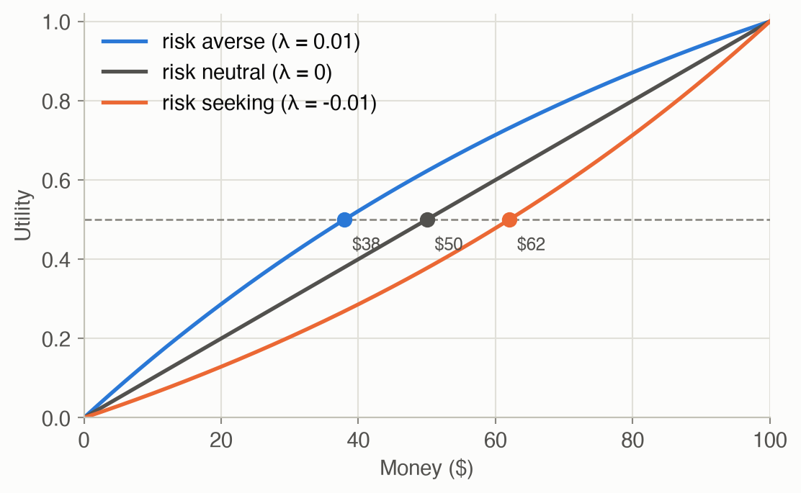

6 · Simple Decisions
Part I — Probabilistic Reasoning
Big picture
Where this chapter fits
Chapters 2–5 were about belief: representing uncertainty, reasoning with it, and learning it from data. But the book is about decisions, and a belief alone doesn’t tell you what to do. This chapter adds the missing ingredient, preferences, and combines them with beliefs to choose actions. It’s the smallest complete decision problem: one choice, made once. Part II (Chapter 7 onward) chains such choices over time, Part III learns the model while deciding, and Part IV decides without knowing the state. Every one of them rests on the principle introduced here: choose the action with the highest expected utility.
The question: when the outcome of each choice is uncertain, how should a rational agent choose, and how much should it pay to learn more before choosing?
The short answer: assign each outcome a number, its utility, that captures how much you want it. Then pick the action whose probability-weighted average utility is highest. Information is worth exactly how much it improves that average, by letting you pick better.
The key ideas at a glance
Rational preferences can be written as numbers. Suppose your preferences between outcomes, and between gambles over outcomes, obey four common-sense rules:
- you can always compare two options (completeness);
- you’re consistent (transitivity: if you prefer A to B and B to C, you prefer A to C);
- no outcome is infinitely good or bad (continuity);
- mixing both options with the same third one doesn’t flip your choice (independence).
Then there is a number, a utility, for each outcome, such that you prefer one gamble to another exactly when its average utility is higher. This is the von Neumann–Morgenstern theorem.
The shape of your utility is your attitude to risk. Money isn’t utility. If an extra $100 means less to you once you already have $100, your utility curve bends downward (concave), and you’ll take a sure $40 over a coin flip for $0 or $100. You’re risk averse. A straight line is risk neutral; an upward bend is risk seeking. The certainty equivalent of a gamble is the sure amount you’d trade it for.
Utilities can be measured by asking about gambles. Fix your worst outcome at utility 0 and your best at 1. Any other outcome’s utility is the probability \(p\) at which you’d be indifferent between getting it for sure and a gamble with a \(p\) chance of the best outcome (and otherwise the worst).
Choose the action with the maximum expected utility (MEU). For each action, average the utility of its possible outcomes, weighted by their probabilities given what you know. Pick the largest. That’s the whole decision rule, and a decision network organizes it: a Bayesian network plus a decision node and a utility node, solved with the inference of Chapter 3.
Information is worth what it changes. The value of information of an observation is how much better, on average, your best decision becomes once you see it before deciding. It’s never negative, and it’s exactly zero when no possible result would change your choice. A traffic app that shows the jam is worth more than a radio that only hints at storms, because it speaks more directly to what matters.
Real people aren’t always rational. People systematically violate the axioms. They overvalue certainty, and they flip choices depending on whether the same options are described as gains or losses. Maximum expected utility is a standard for good decisions, not a description of how people actually decide.
Vocabulary
| Term | Plain meaning |
|---|---|
| Lottery \([S_1: p_1; \ldots; S_n: p_n]\) | A gamble with outcome \(S_i\) at probability \(p_i\) |
| Preference \(A \succ B\), \(A \sim B\) | \(A\) is preferred to \(B\); indifferent between them |
| Utility \(U\) | A number per outcome such that higher average utility means preferred |
| Expected utility \(EU\) | The probability-weighted average of utility |
| Risk averse / neutral / seeking | Concave / straight / convex utility of money |
| Certainty equivalent | The sure amount worth the same as a gamble |
| Decision network | Chance nodes, decision nodes, and a utility node |
| Maximum expected utility (MEU) | Choose the action with the highest expected utility |
| Value of information (VOI) | How much seeing something before deciding improves expected utility |
After this chapter you can
- State the rationality axioms, and explain what a utility function is and why it exists.
- Read risk attitudes off a utility curve, and compute a certainty equivalent.
- Solve a decision network for the best action given any evidence.
- Compute the value of an observation, and predict when it will be zero.
- Recognize common ways human choices violate expected utility.
Intuition
TipAnalogy
Every morning you decide how to commute: leave at the usual time, leave 30 minutes early, or stay home and work remotely. None of these guarantees a good outcome, because a traffic jam may or may not happen. A sensible commuter does three things without thinking of them as math:
- puts a price on each outcome: being late is bad (10 points), losing sleep is mildly bad (2), a lost workday is worse (6);
- weighs each option by how likely each outcome is, given what they know;
- picks the option with the best weighted average.
Sometimes it’s worth first checking the radio or a traffic app, but only if what they might see could change the plan.
Figure 2 draws the commute decision. It’s the commute network from Chapter 2, plus a decision (what to do) and a utility (how good the result is).
Why numbers at all?
If your preferences are consistent, they can be summarized by numbers. Consistency rules out, for example, preferring on time to early, early to home, and home to on time. Someone with those circular tastes could be charged a small fee to switch at each step and would happily go around the circle forever, paying each time. That’s the “money pump” argument for transitivity. The four axioms together guarantee a utility scale, which is why “assign points, maximize the average” is a principled rule and not just a convenient one. See Equation 1 and Equation 2.
Risk attitude is curvature
Offer a coin flip: $0 or $100. Its average is $50. Many people would rather have a sure $40. That’s rational if the second $50 matters less to them than the first. On a utility curve that bends downward (Figure 5), the gamble’s average utility lands below the utility of $50, and the sure amount worth the same (the certainty equivalent) is about $38 for one common curve. See Equation 3.
Measuring a utility
To find how much you value “arriving 10 minutes late”, compare it with a gamble: “arrive on time with probability \(p\), or an hour late otherwise”. Raise \(p\) until you’re torn. If that happens at \(p = 0.7\), then on a scale where “on time” is 1 and “an hour late” is 0, “10 minutes late” is worth 0.7. See Equation 5.
Maximizing expected utility
With no information, a jam happens 25.4% of the time: - Leave on time: you’re late 16.4% of the time, costing \(10 \times 0.164 = 1.64\) points on average. - Leave early: you pay 2 points for sure, plus a small lateness risk, for 2.25. - Stay home: 6.
So you leave on time. If the radio issues a storm alert, a jam becomes 65% likely. Leaving on time now costs 3.44 on average, and leaving early only 2.65, so you leave early. The rule didn’t change; the probabilities did. See Equation 6 and Figure 6.
What a look is worth
Before deciding, you could check the radio. It changes your decision only when it reports an alert (11% of mornings), and even then the gain is modest: it’s worth about 0.09 points on average. A traffic app that shows the jam itself is worth about 0.51, over five times as much, because it tells you exactly the thing your choice depends on. If you already know there’s a jam, the radio is worth nothing: no alert could change your mind. See Equation 7.
When people aren’t rational
In a famous experiment, most people prefer a sure $1 million to a gamble that is 89% $1M, 10% $5M and 1% $0. The same people then prefer “10% $5M” to “11% $1M” when neither is certain. No utility function makes both choices. The first choice says the 1% risk of nothing outweighs the extra 10% chance at $5M, and the second says the reverse, even though the second pair of options is just the first pair with the same 89% chunk removed. The pull of certainty is stronger than expected utility allows. See Irrationality.
Formalism
Rational preferences
Outcomes and gambles are compared with lotteries: \([S_1 : p_1; \ldots; S_n : p_n]\) yields outcome \(S_i\) with probability \(p_i\). Write \(A \succ B\) for “\(A\) is preferred to \(B\)”, \(A \sim B\) for indifference, and \(A \succeq B\) for “at least as good” (ADM §6.1).
\[ \begin{aligned} &\textbf{Completeness:} && \text{exactly one of } A \succ B,\ B \succ A,\ A \sim B \\ &\textbf{Transitivity:} && A \succeq B \text{ and } B \succeq C \implies A \succeq C \\ &\textbf{Continuity:} && A \succeq C \succeq B \implies \exists\, p:\ [A : p;\ B : 1-p] \sim C \\ &\textbf{Independence:} && A \succ B \implies [A : p;\ C : 1-p] \succeq [B : p;\ C : 1-p] \end{aligned} \tag{1}\]
In words. You can compare any two options. Your preferences don’t go in circles. Anything between two options can be matched by a gamble between them. And mixing two options with the same third one, in the same proportion, doesn’t reverse your preference.
Term by term.
- Completeness rules out “I can’t compare these”.
- Transitivity rules out cycles, which would let someone “money pump” you.
- Continuity says no outcome is infinitely better or worse than another, so some probability always balances them.
- Independence says a common ingredient, \(C\) with probability \(1-p\) in both lotteries, shouldn’t affect the choice.
These axioms imply a utility function exists (von Neumann and Morgenstern, Theory of Games and Economic Behavior, 1944).
Utility
A utility function \(U\) assigns each outcome a number such that \(A \succeq B\) exactly when \(U(A) \ge U(B)\) (ADM §6.2). For lotteries:
\[ U\big([S_1 : p_1;\ \ldots;\ S_n : p_n]\big) = \sum_{i=1}^{n} p_i\, U(S_i) \tag{2}\]
In words. A gamble is worth the probability-weighted average of its outcomes’ utilities.
Term by term. \(p_i\) is the probability of outcome \(S_i\), and \(U(S_i)\) is that outcome’s utility. Any positive rescaling, \(aU + b\) with \(a > 0\), represents the same preferences. Only the differences between utilities matter, and only up to scale.
Applied to money, the curve’s shape describes your attitude to risk:
\[ U(x_{\text{ce}}) = \mathbb{E}\big[U(x)\big] \qquad\Longrightarrow\qquad x_{\text{ce}} = U^{-1}\big(\mathbb{E}[U(x)]\big) \tag{3}\]
In words. The certainty equivalent is the sure amount whose utility equals the gamble’s expected utility: the price at which you’d swap the gamble for cash.
Term by term.
- \(\mathbb{E}[U(x)]\) is the expected utility of the gamble’s money outcomes.
- For a concave (risk-averse) \(U\), \(x_{\text{ce}} < \mathbb{E}[x]\). The gap \(\mathbb{E}[x] - x_{\text{ce}}\) is the risk premium, what you’d pay to avoid the gamble.
- For a linear \(U\) (risk neutral), \(x_{\text{ce}} = \mathbb{E}[x]\). For a convex \(U\) (risk seeking), \(x_{\text{ce}} > \mathbb{E}[x]\).
A common choice for money is the exponential utility:
\[ U(x) = 1 - e^{-\lambda x} \qquad x_{\text{ce}} = -\frac{1}{\lambda} \ln \mathbb{E}\big[e^{-\lambda x}\big] \tag{4}\]
In words. A curve that rises quickly at first and then flattens, with \(\lambda\) setting how fast it flattens, which is how risk averse you are.
Term by term. \(\lambda > 0\) gives risk aversion, larger \(\lambda\) meaning more. The certainty-equivalent formula comes from solving \(1 - e^{-\lambda x_{\text{ce}}} = \mathbb{E}[1 - e^{-\lambda x}]\). For the $0 or $100 coin flip with \(\lambda = 0.01\): \(\mathbb{E}[e^{-0.01x}] = \frac{1}{2}(1 + e^{-1}) = 0.684\), so \(x_{\text{ce}} = -100 \ln 0.684 = \$38\). Other common forms are the quadratic and power utilities (ADM §6.2).
Measuring utility
Fix the worst outcome \(S_\bot\) at utility 0 and the best \(S_\top\) at 1 (ADM §6.3). For any other outcome \(S\):
\[ S \sim [S_\top : p;\ S_\bot : 1 - p] \quad\Longrightarrow\quad U(S) = p \tag{5}\]
In words. Find the gamble between the best and worst outcomes that you like exactly as much as \(S\). Its winning probability is \(S\)’s utility.
Term by term. Continuity (Equation 1) guarantees that such a \(p\) exists. By Equation 2, the gamble’s utility is \(p \cdot 1 + (1-p) \cdot 0 = p\), and indifference means equal utilities.
Maximum expected utility
With an observation \(o\), actions \(a\), and outcome states \(s'\) (ADM §6.4):
\[ EU(a \mid o) = \sum_{s'} P(s' \mid a, o)\, U(s') \qquad a^* = \mathop{\mathrm{arg\,max}}_{a} EU(a \mid o) \tag{6}\]
In words. For each action, average the utility of the outcomes it might lead to, using their probabilities given what you’ve observed. Choose the action with the largest average.
Term by term.
- \(P(s' \mid a, o)\) is a belief about outcomes, computed by inference (Ch 3).
- \(U(s')\) is the utility of outcome \(s'\). It may also depend on the action itself, like the lost sleep from leaving early.
- \(a^*\) is the rational choice. Write \(EU^*(o) = \max_a EU(a \mid o)\) for its value.
A decision network (ADM §6.5) packages such a problem: chance nodes (a Bayesian network), decision nodes whose values you choose, and utility nodes. To solve it, fix the decision to each action in turn, run inference for the variables the utility depends on, and apply Equation 6.
Value of information
Suppose you could observe some variable \(O'\) before deciding (ADM §6.6):
\[ \mathrm{VOI}(O' \mid o) = \left( \sum_{o'} P(o' \mid o)\, EU^*(o, o') \right) - EU^*(o) \tag{7}\]
In words. Look before you leap, on average: the expected best utility after seeing \(O'\), minus the best utility if you decide now.
Term by term.
- \(P(o' \mid o)\) says how likely each thing you might see is, given what you already know.
- \(EU^*(o, o')\) is the best expected utility once you’ve also seen \(o'\): you get to react to it.
- \(\mathrm{VOI} \ge 0\) always. You could ignore what you see and do what you’d have done anyway, so looking can’t hurt on average.
- It’s zero when every possible \(o'\) leads to the same best action. That’s why information about things you can’t act on, or that can’t change your mind, is worthless for this decision.
Irrationality
People systematically violate the axioms (ADM §6.7). In Allais’s experiment (M. Allais, Econometrica, 1953), most people choose:
- 1A ($1M for sure) over 1B (89% $1M, 10% $5M, 1% $0);
- 2B (10% $5M, 90% $0) over 2A (11% $1M, 89% $0).
Write \(u_0, u_1, u_5\) for the utilities of $0, $1M and $5M. Preferring 1A means \(u_1 > 0.89u_1 + 0.10u_5 + 0.01u_0\), that is, \(0.11u_1 > 0.10u_5 + 0.01u_0\). Preferring 2B means \(0.10u_5 + 0.90u_0 > 0.11u_1 + 0.89u_0\), that is, \(0.10u_5 + 0.01u_0 > 0.11u_1\). The two inequalities contradict each other, so no utility function fits both choices. It violates independence: the second pair is the first with a common 89% chunk changed from $1M to $0. Other documented effects include framing: people choose differently when identical outcomes are described as lives saved rather than lives lost (Tversky and Kahneman, Science, 1981).
Worked example
The commute decision by hand
The utility table (in points; being late costs 10, leaving early 2, staying home 6):
| on time | late | |
|---|---|---|
| Leave on time | 0 | −10 |
| Leave early | −2 | −12 |
| Stay home | −6 | (can’t happen) |
\(P(\text{late} \mid \text{jam}, \text{action})\) is 0.5 on time, 0.1 early, and 0 at home. Without a jam it’s 0.05 on time, and 0 otherwise.
No information. \(P(\text{jam}) = 0.254\) (from Ch 2).
- On time: \(P(\text{late}) = 0.254(0.5) + 0.746(0.05) = 0.164\), so \(EU = -10 \times 0.164 = -1.64\).
- Early: \(P(\text{late}) = 0.254 \times 0.1 = 0.025\), so \(EU = -2 - 10 \times 0.025 = -2.25\).
- Home: \(EU = -6\).
Best: leave on time, with \(EU^* = -1.64\).
After a radio alert. \(P(\text{jam} \mid \text{alert}) = 0.654\) (from Ch 3).
- On time: \(P(\text{late}) = 0.654(0.5) + 0.346(0.05) = 0.344\), so \(EU = -3.44\).
- Early: \(EU = -2 - 10(0.0654) = -2.65\).
Best: leave early.
The value of listening to the radio. An alert comes 11.3% of mornings; otherwise, \(P(\text{jam} \mid \text{no alert}) = 0.203\) and leaving on time is best, with \(EU = -1.41\). So \[ \mathrm{VOI}(\text{radio}) = 0.113(-2.65) + 0.887(-1.41) - (-1.64) \approx 0.09. \]
| Evidence | Leave on time | Leave early | Stay home |
|---|---|---|---|
| Nothing observed | -1.643 | -2.254 | -6.000 |
| Radio alert | -3.443 | -2.654 | -6.000 |
| No radio alert | -1.414 | -2.203 | -6.000 |
| App shows a jam | -5.000 | -3.000 | -6.000 |
| App shows no jam | -0.500 | -2.000 | -6.000 |
A certainty equivalent
With exponential utility and \(\lambda = 0.01\), a coin flip for $0 or $100 has certainty equivalent \(x_{\text{ce}} = \$38\) (Equation 4), so the risk premium is $50 − $38 = $12. With \(\lambda = 0.02\), \(x_{\text{ce}}\) drops to $28: a more risk-averse person demands a bigger discount to take the gamble.
Interactive
What should I do this morning?
Set what you’ve observed and what the outcomes cost you. The explorer shows each action’s expected utility, the best choice, and what it would be worth to check the radio or the traffic app first. Try raising the cost of being late: the app becomes more valuable, and at some point leaving early wins even with no information.
Would you take the gamble?
A coin flip pays $100 with the chance you set, and $0 otherwise. The alternative is a sure amount. Set your risk attitude: \(\lambda > 0\) is risk averse, \(\lambda < 0\) risk seeking, and \(\lambda = 0\) risk neutral. The curve is your utility of money; the certainty equivalent is where its height equals the gamble’s expected utility.
Algorithms & code
Utility and risk
def expected_utility(probs, utilities) -> float:
"""Utility of a lottery [S_1: p_1; ...; S_n: p_n] = sum_i p_i U(S_i)."""
return float(np.dot(probs, utilities))
def exponential_utility(x, lam: float):
"""U(x) = 1 - exp(-lam x). Concave (risk averse) when lam > 0; the
bigger lam, the more strongly sure things are preferred to gambles."""
return 1 - np.exp(-lam * np.asarray(x, dtype=float))
def certainty_equivalent(outcomes, probs, lam: float) -> float:
"""The sure amount whose utility equals the lottery's expected utility,
for exponential utility: solve U(ce) = EU by inverting U."""
eu = expected_utility(probs, exponential_utility(outcomes, lam))
return float(-np.log(1 - eu) / lam) # U^-1(u) = -ln(1 - u) / lamusing ADM
# Utility of a lottery: the probability-weighted average of its outcomes' utilities.
expected_utility(p, u) = sum(p .* u)
# U(x) = 1 - exp(-λx): concave, i.e. risk averse, for λ > 0.
exponential_utility(x, λ) = 1 - exp(-λ * x)
# Sure amount with the same utility as the lottery: invert U(ce) = EU.
certainty_equivalent(xs, ps, λ) = -log(1 - expected_utility(ps, exponential_utility.(xs, λ))) / λSolving a decision network, and the value of information
action_utilities fixes the decision to each action in turn and asks inference (Chapter 3) for the probabilities of the outcomes the utility depends on.
def action_utilities(bn, decision: str, outcomes: tuple, U, evidence: dict):
"""EU(a | evidence) for every action a:
sum over outcome values of P(outcome | a, evidence) * U[a, outcome].
The decision has no parents, so fixing it to a is just one more piece
of evidence for inference (Ch 3).
"""
return np.array([
np.sum(exact_inference(bn, outcomes, {**evidence, decision: a}).table
* U[a])
for a in range(bn.card[decision])
])
def best_action(bn, decision: str, outcomes: tuple, U, evidence: dict):
"""The maximum-expected-utility action and its expected utility."""
eu = action_utilities(bn, decision, outcomes, U, evidence)
a = int(np.argmax(eu))
return a, float(eu[a])
def value_of_information(bn, decision: str, outcomes: tuple, U,
evidence: dict, observe: str) -> float:
"""VOI of observing `observe` before deciding: the expected best EU
after seeing its value, minus the best EU without it.
`observe` must not depend on the decision (you see it before acting),
so the decision's placeholder table never affects P(o | evidence).
"""
_, now = best_action(bn, decision, outcomes, U, evidence)
p = exact_inference(bn, (observe,), evidence).table # P(o | evidence)
later = 0.0
for o in range(bn.card[observe]):
if p[o] > 0: # skip values that can't occur
seen = {**evidence, observe: o}
later += p[o] * best_action(bn, decision, outcomes, U, seen)[1]
return float(later - now)# P(query = each value | evidence): sum the chain rule over every completion of the other
# variables, then normalize. Brute force, fine for small networks.
function posterior(bn, query, evidence)
hidden = [x for x in keys(bn.parents) if x != query && !haskey(evidence, x)]
p = zeros(bn.card[query])
for q in 1:bn.card[query], vals in Iterators.product((1:bn.card[h] for h in hidden)...)
p[q] += probability(bn, merge(evidence, Dict(query => q), Dict(zip(hidden, vals))))
end
return p ./ sum(p)
end
# EU(a | evidence) for each action a, for the commute network: the decision is :D and
# the utility depends on :L (late) and the action, U[a, late].
action_utilities(bn, U, evidence) =
[sum(posterior(bn, :L, merge(evidence, Dict(:D => a))) .* U[a, :]) for a in 1:bn.card[:D]]
function best_action(bn, U, evidence)
eu = action_utilities(bn, U, evidence)
a = argmax(eu)
return a, eu[a]
end
# VOI: expected best EU after seeing `observe`, minus the best EU now.
function value_of_information(bn, U, evidence, observe)
_, now = best_action(bn, U, evidence)
p = posterior(bn, observe, evidence) # seen before deciding, so the decision can't affect it
later = sum(p[o] * best_action(bn, U, merge(evidence, Dict(observe => o)))[2]
for o in eachindex(p) if p[o] > 0)
return later - now
endRun them on the commute decision
from adm.problems.commute import COMMUTE_DECISION as bn, COMMUTE_UTILITY as U
now = action_utilities(bn, "D", ("L",), U, {}) # nothing observed
after_alert = best_action(bn, "D", ("L",), U, {"A": 1}) # radio alert heard
voi = {o: value_of_information(bn, "D", ("L",), U, {}, o) for o in ("S", "R", "A", "J")}
ce = certainty_equivalent([0, 100], [0.5, 0.5], lam=0.01)bn, U = commute_decision_network(), COMMUTE_UTILITY
nothing_seen = Dict{Symbol, Int}()
@assert action_utilities(bn, U, nothing_seen) ≈ [-1.643, -2.254, -6.0]
@assert best_action(bn, U, Dict(:A => 2))[1] == 2 # after an alert (2 = yes): leave early
@assert isapprox(value_of_information(bn, U, nothing_seen, :J), 0.508; atol = 1e-9)
@assert isapprox(value_of_information(bn, U, nothing_seen, :A), 0.0892; atol = 1e-4)
@assert isapprox(certainty_equivalent([0, 100], [0.5, 0.5], 0.01), 37.99; atol = 0.01)Expected utility, nothing observed: {'leave on time': np.float64(-1.643), 'leave early': np.float64(-2.254), 'stay home': np.float64(-6.0)}
After a radio alert: leave early (EU -2.654)
Value of observing, before deciding: {'S': 0.109, 'R': 0.141, 'A': 0.089, 'J': 0.508}
Certainty equivalent of a $0/$100 coin flip, lambda = 0.01: $37.99
NoteReading the Julia code (for Python programmers)
exponential_utility.(xs, λ): the dot applies the function to every element ofxs, like a NumPy ufunc.merge(d1, d2, d3)combines several dictionaries, with later ones winning, like{**d1, **d2, **d3}.Iterators.product(...)with...splatting lists every combination of the hidden variables’ values, likeitertools.product(*ranges).argmax(eu)gives the index of the largest value, likenp.argmax. Indices start at 1, so action 2 is “leave early”.
Results
Risk attitude is curvature

The risk-averse curve reaches the gamble’s expected utility at $38, so that person would sell the $50-average gamble for $38. The risk seeker would demand $62 before giving it up.
How the best action depends on belief
The only thing the evidence changes is the probability of a jam. Figure 6 plots each action’s expected utility against that probability. Leaving early overtakes leaving on time once a jam is more than about 43% likely. Each piece of evidence moves you along this axis.

What information is worth
Figure 7 compares the value of observing each variable before deciding, and shows how the traffic app’s value depends on how much you mind being late. Information matters most when the decision is a close call. Both curves peak at a lateness cost of about 14, exactly where the no-information choice flips from on time to early. When lateness barely matters (below about 5), you’d leave on time whatever you saw. When it matters a lot (near 40), you’d leave early whatever you saw. The radio’s value is zero outside a narrow band of costs, because an alert shifts P(jam) less than the app does.

Solved problems
Problem 1: the money pump. Someone prefers on time ≻ early, early ≻ home, and home ≻ on time. Show how they could be made to lose money.
TipSolution
Start them with “home”. They prefer “early”, so they’ll pay a small fee, say 1 cent, to switch to it. They prefer “on time” to “early”, so they pay another cent to switch. They prefer “home” to “on time”, so they pay another cent, and they’re back where they started, 3 cents poorer. Repeat forever. Transitivity (Equation 1) rules this out, and any utility function automatically satisfies it, since numbers can’t go in circles.
Problem 2: reading a utility off a gamble. On a scale with \(U(\$0) = 0\) and \(U(\$100) = 1\), you’re indifferent between $40 for sure and a 50% chance at $100. What is \(U(\$40)\), and are you risk averse?
TipSolution
By Equation 5, \(U(\$40) = 0.5\). The gamble’s expected money is $50, but you’d accept $40 for it: the certainty equivalent is below the expected value, so you’re risk averse, with a risk premium of $10. Your utility curve passes through \((40, 0.5)\), above the straight line from \((0, 0)\) to \((100, 1)\), which would give \(0.4\) at $40. That’s what concave means.
Problem 3: when is information worthless? You already know the app shows a jam. Why is checking the radio now worth exactly 0? Give a second, different reason information can be worthless.
TipSolution
Given a jam, leaving early is best (EU −3 vs −5 for on time). The radio only tells you about storms, and once the jam is known, the storm doesn’t affect lateness (it’s blocked by the jam; Ch 2). So every radio result leaves the same best action, and Equation 7 gives 0.
A second reason: the observation could shift your beliefs, but not enough to cross a decision threshold. If lateness cost only 1 point, you’d leave on time whatever the radio or the app said, so both would be worth 0 (Figure 7, right panel, near cost 0).
Problem 4: the Allais choices. Show directly that someone who prefers 1A to 1B and 2B to 2A cannot have any utility function.
TipSolution
As in Irrationality: 1A ≻ 1B gives \(0.11u_1 > 0.10u_5 + 0.01u_0\), and 2B ≻ 2A gives \(0.10u_5 + 0.01u_0 > 0.11u_1\). Both can’t be true. The pair 2A/2B is the pair 1A/1B with an 89% chance of $1M replaced by an 89% chance of $0 in both. Independence says such a common change can’t flip the preference, so the flip is exactly a violation of independence.
Recap
- Rational preferences (Equation 1) imply a utility function, and gambles are valued by expected utility (Equation 2). Why it matters: it justifies “maximize expected utility”, and with it the reward-maximizing objective of every later chapter, as the consequence of consistency rather than an arbitrary choice.
- The curvature of a utility function is its attitude to risk, summarized by the certainty equivalent (Equation 3, Equation 4). Why it matters: the same expected money can be a good or a bad deal depending on the decision maker, which matters for any agent acting for a person.
- Utilities can be elicited by comparing outcomes with gambles (Equation 5). Why it matters: utilities are measurable, not guessed, and that’s how rewards are designed in practice.
- Choose the action with the maximum expected utility (Equation 6), computed with inference over a decision network. Why it matters: this is one-step decision making, and Chapter 7’s Bellman equation is exactly this rule applied at every step, with future value as part of the utility.
- The value of information (Equation 7) is never negative, and zero unless the observation could change the decision. Why it matters: it tells an agent what to measure and what to ignore, which is the core of exploration (Ch 15) and of information gathering under partial observability (Part IV).
Cheat sheet & connections
| Name | Formula | Ref |
|---|---|---|
| ★ Rational preference axioms | completeness, transitivity, continuity, independence | Equation 1 |
| ★ Expected utility of a lottery | \(U([S_1{:}\,p_1; \ldots]) = \sum_i p_i U(S_i)\) | Equation 2 |
| Certainty equivalent | \(U(x_{\text{ce}}) = \mathbb{E}[U(x)]\) | Equation 3 |
| Exponential utility | \(U(x) = 1 - e^{-\lambda x}\), \(\ x_{\text{ce}} = -\frac1\lambda \ln \mathbb{E}[e^{-\lambda x}]\) | Equation 4 |
| Elicitation | \(S \sim [S_\top{:}\,p; S_\bot{:}\,1-p] \Rightarrow U(S) = p\) | Equation 5 |
| ★ Maximum expected utility | \(a^* = \arg\max_a \sum_{s'} P(s' \mid a, o) U(s')\) | Equation 6 |
| ★ Value of information | \(\sum_{o'} P(o' \mid o) EU^*(o, o') - EU^*(o)\) | Equation 7 |
Common pitfalls
- Maximizing expected money. Money isn’t utility. For a risk-averse decision maker, the higher-average gamble can be the wrong choice.
- Paying for information that can’t change the decision. Check whether any possible result would flip the best action. If none would, its value is 0.
- Letting the decision influence your beliefs about its inputs. In a decision network, choosing an action doesn’t make a storm more likely. Condition on the decision only for its consequences.
- Treating human choices as data about rational utilities. People show the certainty effect and framing effects. Elicit carefully, and expect inconsistencies.
Connections
- Ch 3 · Inference computes every probability used in a decision network.
- Ch 7 · Exact Solution Methods chains this one-step rule into sequential decisions.
- Ch 15 · Exploration and Exploitation is about deciding when information is worth its cost.
- Ch 20 · Exact Belief State Planning chooses actions for their information value as well as their reward.